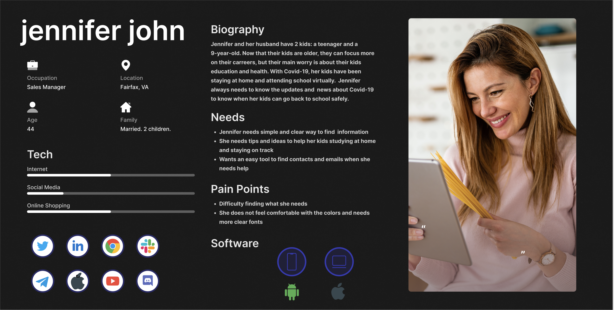
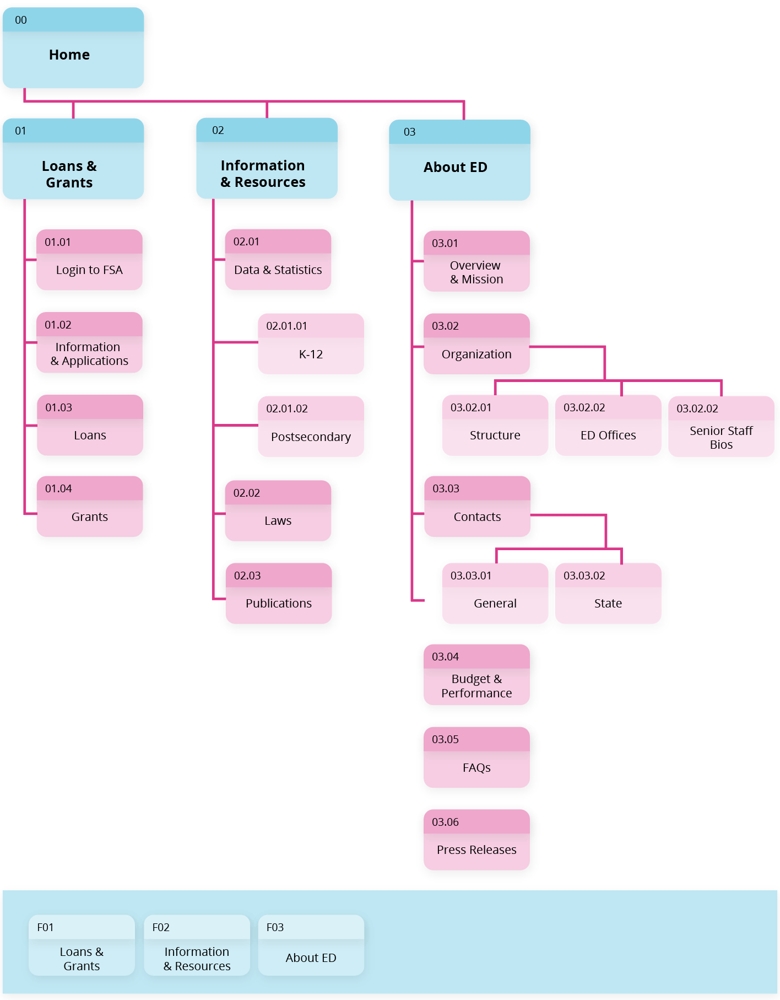
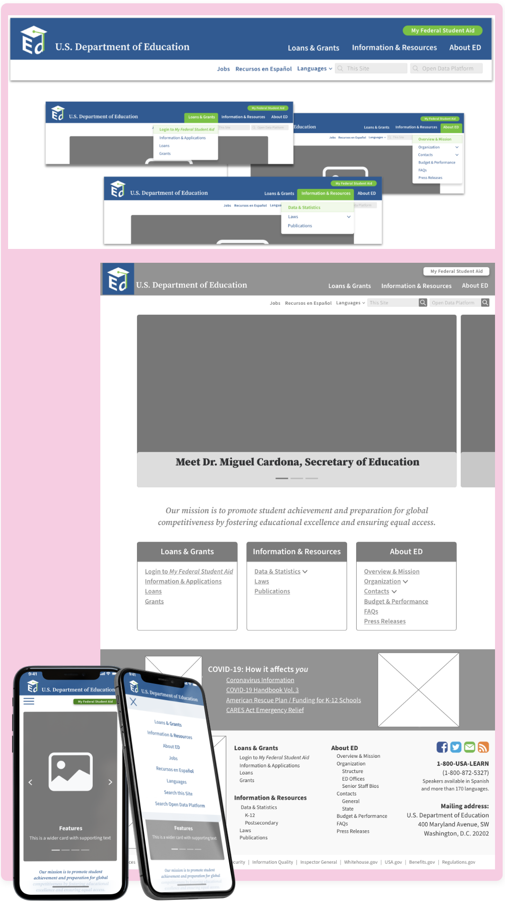
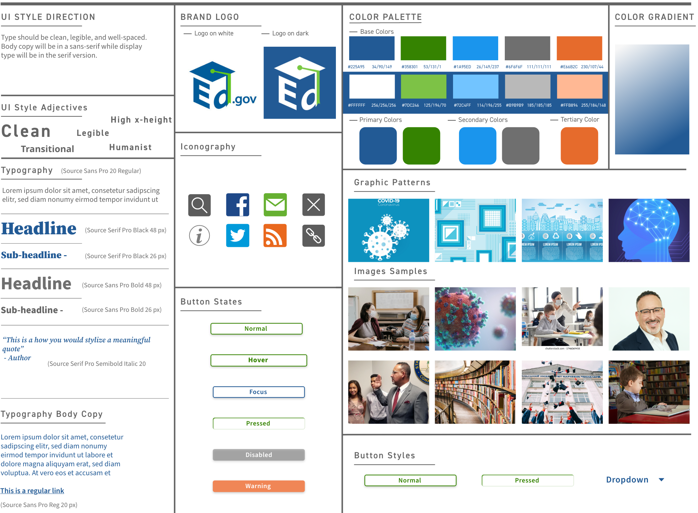
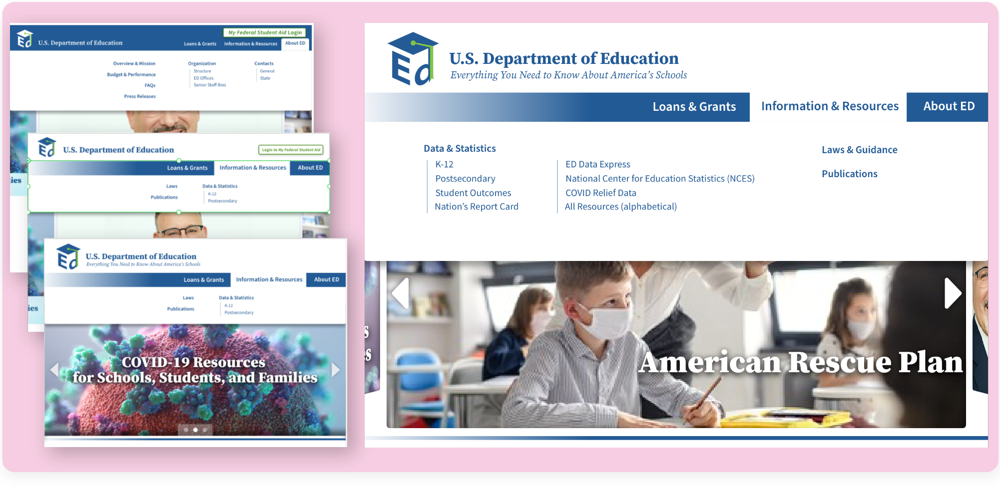
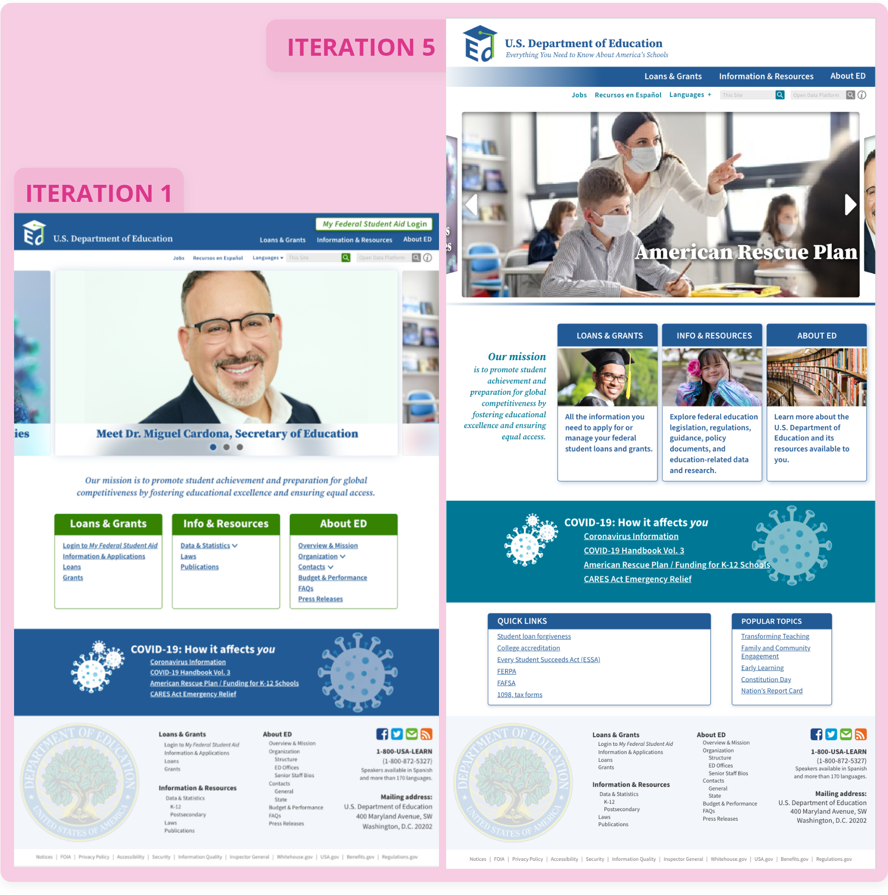

INITIAL RESEARCH & ANALYSIS
At the discovery phase of our project, we conducted a UI pattern redline and analysis, a heuristic evaluation, and UI color accessibility analysis to determine where the site needed improvement.
What did we find?
- The site would benefit from more white space.
- Text should be more concise.
- Users’ location on the site should be better defined.
- Compelling visuals are needed.
- Navigation would benefit from streamlining.
- Hierarchy of information is difficult to discern.
- Color accessibility is failing in some areas, especially in text over images.
USABILITY TESTING
We conducted usability tests with five users to gain a better understanding of the current site’s functionality and how users interact with it.
What did we find?
- Users had to do a lot of scrolling on mobile devices to find the necessary information.
- Main headings/categories seem to be mostly intuitive for finding what users need.
- Content is too text heavy causing users to lose focus.
- It is hard for users to distinguish hierarchy.
- The quantity of links on the landing page makes it confusing and overwhelming for users.
INFORMATION ARCHITECTURE (IA)
While our user base is quite diverse, including students, parents, and professionals, we created a user persona based on a parent of a special needs student.
DATA SYNTHESIS
One of the key focuses in this redesign is the IA and usability of the site. We created mood boards, conducted a LATCH analysis, and held three card sorting sessions to determine the needs of our users and establish our UI navigation.
What did we find?
- There is a lot of crossover of information – much of the content can be condensed into one category.
- The site would benefit from a quick links section.
- Features section could be consolidated to include press releases, Dr. Cardona, etc.
- Mission can be in about us.
- Some headings are not intuitive enough - not everyone looked for statistics within data.
- On mobile, there seemed confusion about where to click.
- Some naming conventions did not explain the content it linked to.
- Should be simplified into three main navigation sections: grants and loans, information & resources, about us.
Sitemap
Navigation
visual design & style guide
After conducting a brand voice analysis and referring back to our color accessibility analysis, we created a style tile to define the look and feel that the new website would communicate.

responsive design & user testing
Not only should this website be visually appealing, it should be useful and intuitive for our users on any device. Using the insights gained from testing the low fidelity prototypes and navigation samples, high fidelity protoypes were created, paying close attention to concerns for each type of device.
User feedback to guide the multiple iterations:
- Problem: Purpose and mission are unclear
Solution: Enlarged text for Mission statement and other sections below - Problem: Reads as a flyer to some users
Solution: Gallery is active and timed, that should resolve this issue - Problem: Reads more as a resource for Federal Student Aid
Solution: Make the button less prominent and add tagline - Problem: Dr. Cardona as first image in carousel did not appeal to users
Solution: Changed the order of the images - Problem: Not enough second/third tier navigation options to find what they needed
Solution: Restructured the navigation - Problem: Cards with navigation were redundant
Solution: Removed navigation from cards and replaced with descriptions - Problem: Color choices at the bottom of the home page makes it read as if everything that follows is about COVID
Solution: Changed colors of the cards below the COVID section to differentiate it
Iterations


LESSONS LEARNED
This website redesign provided the challenge of considering accessibility and compliance, especially with color and text. It posed the challenge of creating pleasing color palettes within the brand of the Department of Education that are also accessible for most.
Additionally, we learned that although one element may need to be easily accessible (i.e.: the Student Aid information), the placement must still be considered very carefully so that it does not overshadow the remaining information.
We also learned that making a site that is extremely text and resource heavy requires close attention to hierarchy of information and white space.